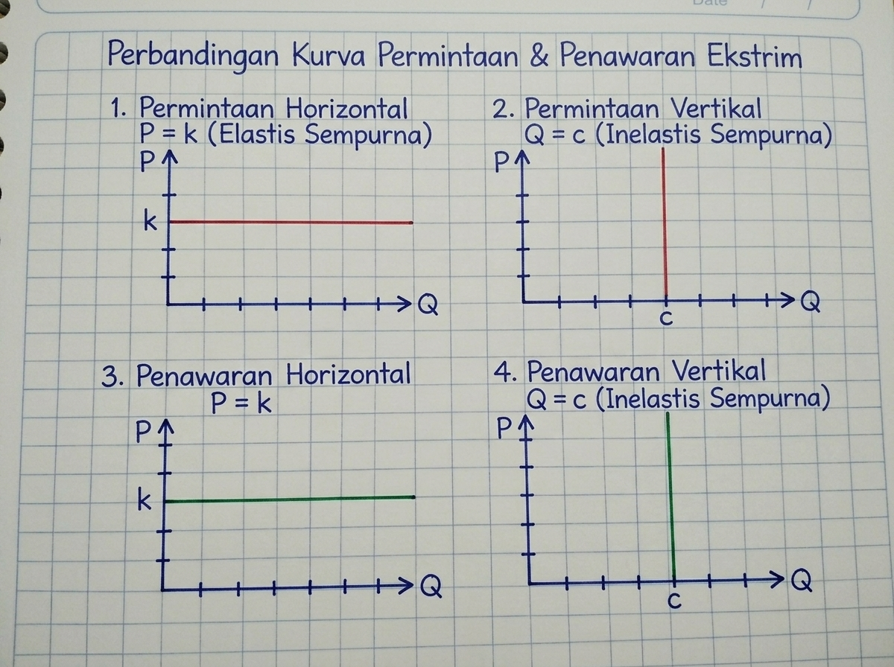
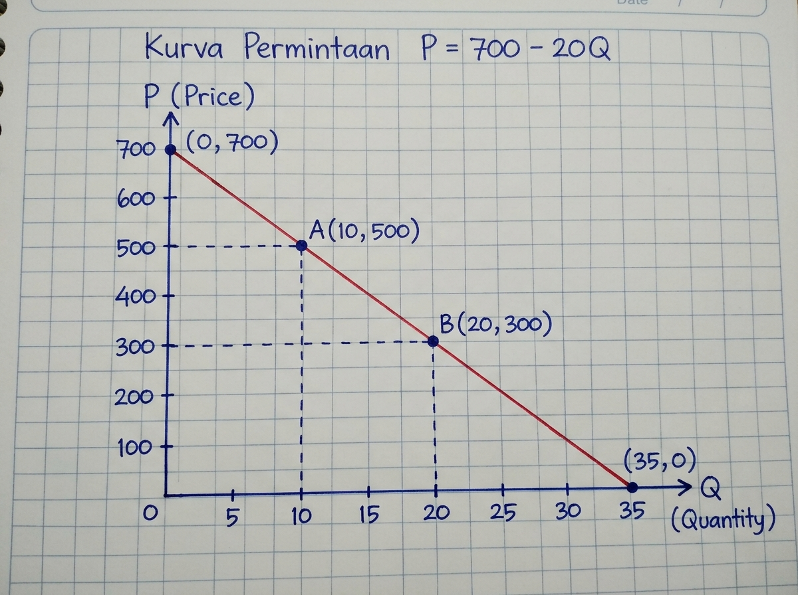
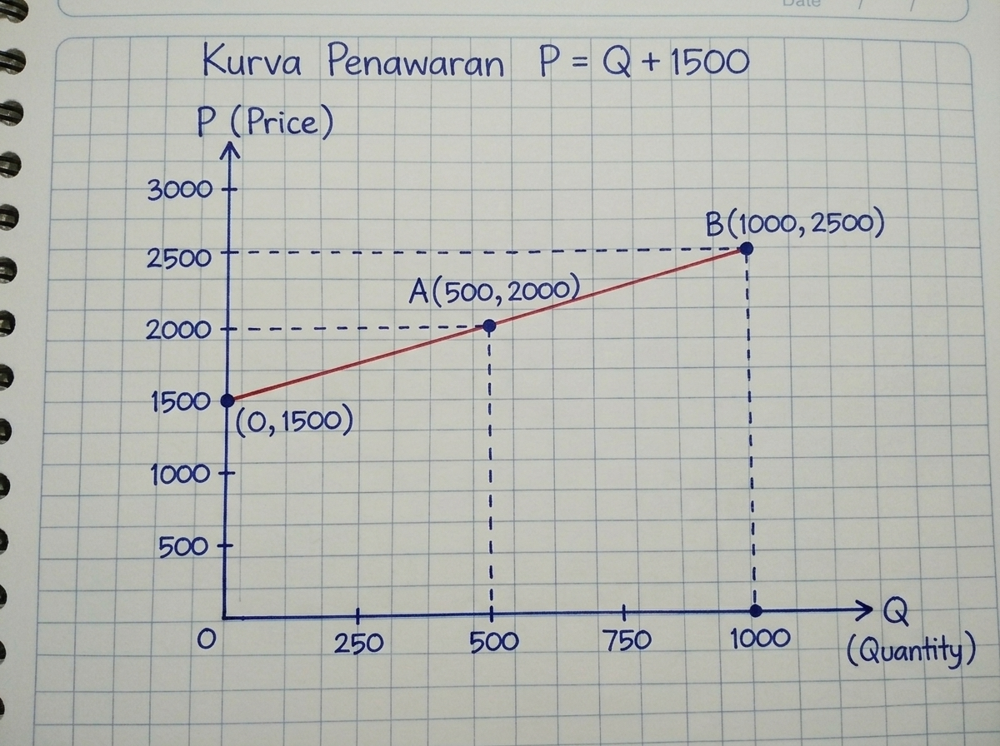
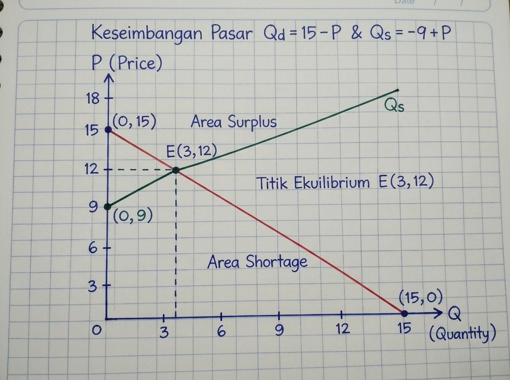
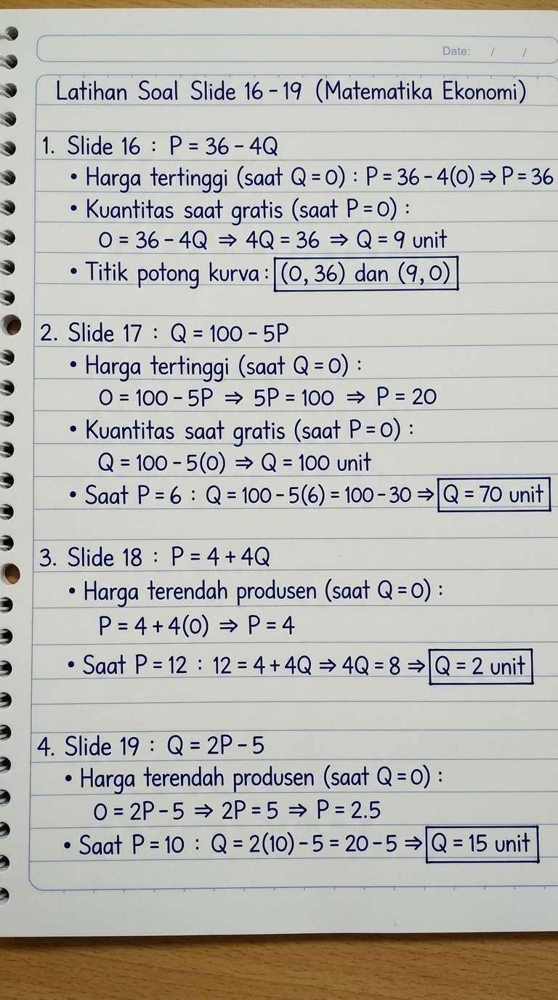
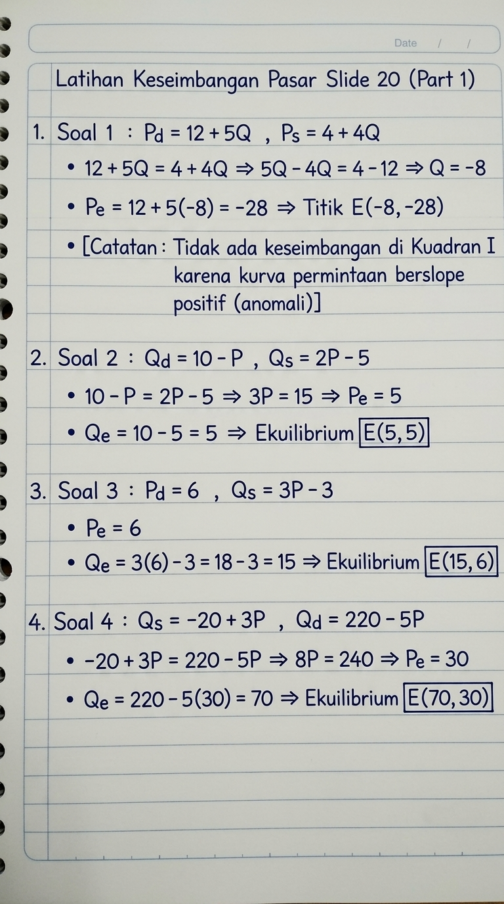
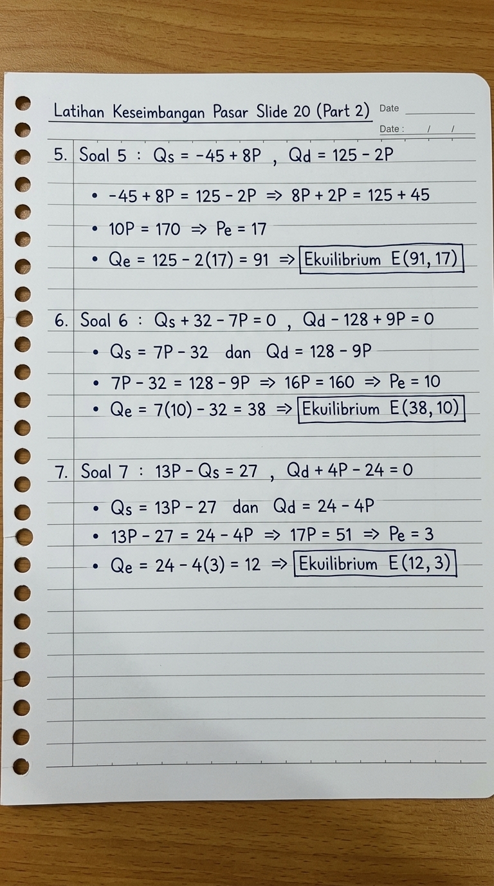

Fungsi Permintaan, Penawaran & Keseimbangan Pasar
Mata Kuliah: Matematika Ekonomi (KP21517007) · Kelas C (3 SKS)
Dosen Pengampu: Vepi Apiati, S.Pd., M.Pd. | Pertemuan: 02 (Kamis, 20 Agustus 2026)
BAGIAN I — FUNGSI PERMINTAAN (SLIDE 2–6)
1. Konsep & Hukum Permintaan
Permintaan (Demand) adalah jumlah barang/jasa yang ingin dan mampu dibeli konsumen pada berbagai tingkat harga dalam periode tertentu. Hukum permintaan menyatakan bahwa dengan asumsi faktor lain tetap (ceteris paribus):
Bentuk umum persamaan linier permintaan:
Contoh Nyata Sehari-hari:
- Diskon Sepatu 50%: Ketika harga sepasang sepatu turun dari Rp500.000 menjadi Rp250.000, jumlah konsumen yang membeli melonjak drastis. Ini adalah pergerakan di sepanjang kurva permintaan akibat perubahan harga barang itu sendiri.
- Kenaikan Tarif Ojek Online Jam Sibuk: Saat hujan lebat atau jam sibuk sore hari, tarif ojek online melonjak tinggi. Sebagian besar konsumen memilih menunda perjalanan atau beralih ke angkutan umum, sehingga jumlah order yang diminta turun.
2. Kasus Khusus Permintaan & Penawaran

A. Permintaan Horizontal: \(P = k\) (Elastis Sempurna)
Konsumen hanya bersedia membeli pada satu tingkat harga pasar tertentu (\(k\)). Kenaikan harga sedikit saja membuat permintaan seketika menjadi nol karena pembeli 100% beralih ke penjual lain.
Contoh Nyata: Penjual bensin eceran persis di samping SPBU resmi. Jika ia menjual Rp10.000/liter sama dengan SPBU, pembeli ada; namun jika dinaikkan menjadi Rp10.500/liter, pembeli akan masuk ke SPBU sehingga penjual eceran kehilangan seluruh pembelinya.
B. Permintaan Vertikal: \(Q = c\) (Inelastis Sempurna)
Jumlah barang yang dibutuhkan konsumen mutlak tetap (\(c\)) pada tingkat harga berapa pun. Perubahan harga tidak mengubah kuantitas yang wajib dikonsumsi.
Contoh Nyata: Dosis suntikan insulin harian bagi penderita diabetes melitus atau tabung oksigen medis darurat bagi pasien gagal napas di IGD.
3. Contoh Soal Nyata Permintaan (Slide 6)
Soal: Suatu produk terjual sebanyak 10 unit pada harga Rp500, dan terjual 20 unit pada harga Rp300. Tentukan fungsi permintaan dan gambarkan grafiknya!
Diketahui: Titik \(A(Q_1=10, P_1=500)\) dan Titik \(B(Q_2=20, P_2=300)\).
Langkah 1 (Rumus 2 Titik):
Langkah 2 (Penyelesaian Aljabar):
Langkah 3 (Titik Potong Kurva):
- Titik potong sumbu \(P\) (saat \(Q=0\)): \(P = 700 \implies (0, 700)\).
- Titik potong sumbu \(Q\) (saat \(P=0\)): \(Q = 35 \implies (35, 0)\).

BAGIAN II — FUNGSI PENAWARAN (SLIDE 7–11)
1. Konsep & Hukum Penawaran
Penawaran (Supply) adalah jumlah barang/jasa yang ingin dan mampu dijual produsen pada berbagai tingkat harga dalam periode tertentu. Hukum penawaran menyatakan bahwa dengan asumsi ceteris paribus:
Bentuk umum persamaan linier penawaran:
Contoh Nyata Sehari-hari:
- Panen Petani Cabai: Ketika harga cabai di pasar melonjak hingga Rp100.000/kg, petani dan pedagang terdorong memanen dan menjual sebanyak-banyaknya pasokan ke pasar guna meraih margin keuntungan tinggi.
- Pergeseran Kurva akibat Musim Hujan: Musim hujan lebat yang merusak tanaman cabai menyebabkan pasokan turun drastis pada setiap tingkat harga, menggeser seluruh kurva penawaran ke kiri dan memicu kenaikan harga pasar.
A. Penawaran Horizontal: \(P = k\)
Pasokan tersedia dalam jumlah melimpah pada tarif dasar tetap yang ditetapkan oleh penyedia atau regulasi pemerintah.
Contoh Nyata: Tarif dasar air bersih PDAM per meter kubik (\(\text{m}^3\)) atau pulsa listrik prabayar PLN per kWh.
B. Penawaran Vertikal: \(Q = c\)
Kuantitas pasokan mutlak terbatas dan tidak dapat ditambah lagi dalam jangka pendek meskipun harga ditawar berlipat ganda.
Contoh Nyata: Kapasitas 80.000 kursi di Stadion GBK saat pertandingan Final, atau satu-satunya lukisan legendaris karya Raden Saleh.
2. Contoh Soal Nyata Penawaran (Slide 11)
Soal: Suatu barang ditawarkan 500 unit saat harga Rp2.000, dan bertambah menjadi 1.000 unit saat harga naik menjadi Rp2.500. Tentukan fungsi penawarannya dan gambarkan grafiknya!
Diketahui: Titik \(A(Q_1=500, P_1=2000)\) dan Titik \(B(Q_2=1000, P_2=2500)\).
Langkah 1 (Rumus 2 Titik):
Langkah 2 (Penyelesaian Aljabar):
Langkah 3 (Titik Minimum & Pembuktian):
- Harga terendah produsen (saat \(Q=0\)): \(P = 1500 \implies (0, 1500)\).
- Uji titik: \(P(500) = 2000\) dan \(P(1000) = 2500\) (Terbukti Cocok).

BAGIAN III — KESEIMBANGAN PASAR (SLIDE 12–15)
1. Konsep & Mekanisme Ekuilibrium
Keseimbangan pasar tercapai saat jumlah barang yang diminta konsumen sama persis dengan jumlah barang yang ditawarkan produsen pada harga tertentu:
- Kondisi Surplus (\(P > P_e\)): Harga di atas harga keseimbangan menyebabkan barang menumpuk di gudang karena penawaran melebihi permintaan (\(Q_s > Q_d\)). Penjual terpaksa menurunkan harga menuju \(P_e\).
- Kondisi Shortage / Kelangkaan (\(P < P_e\)): Harga di bawah harga keseimbangan menyebabkan barang langka dan cepat habis (\(Q_d > Q_s\)). Persaingan antar pembeli mendorong harga naik menuju \(P_e\).
Contoh Nyata: Proses tawar-menawar harga sayuran di pasar tradisional antara ibu rumah tangga dan pedagang hingga tercapai harga kesepakatan.
2. Contoh Soal Keseimbangan Pasar (Slide 15)
Soal: Tentukan titik keseimbangan pasar dari fungsi permintaan \(Q_d = 15 - P\) dan fungsi penawaran \(Q_s = -9 + P\)!
Langkah 1 (Persamaan Ekuilibrium): \(Q_d = Q_s \implies 15 - P = -9 + P\)
Langkah 2 (Mencari Harga Keseimbangan \(P_e\)): \(15 + 9 = P + P \implies 24 = 2P \implies \mathbf{P_e = 12}\)
Langkah 3 (Substitusi Mencari Jumlah Keseimbangan \(Q_e\)):
Kesimpulan: Titik Keseimbangan Pasar berada pada \(\mathbf{E(Q_e=3, P_e=12)}\).

BAGIAN IV — KUNCI JAWABAN LATIHAN SOAL LENGKAP (SLIDE 16–20)
1. Pembahasan Latihan Soal Slide 16 s.d. 19 (Kertas Garis Binder)

2. Pembahasan 7 Latihan Soal Keseimbangan Pasar (Slide 20 - Kertas Garis Binder)


Secara aljabar diperoleh titik potong \(E(-8, -28)\). Namun, dalam teori ekonomi hal ini tidak memiliki keseimbangan riil di Kuadran I karena fungsi permintaan memiliki kemiringan (slope) positif (\(+5Q\)), yang menyalahi hukum permintaan normal.